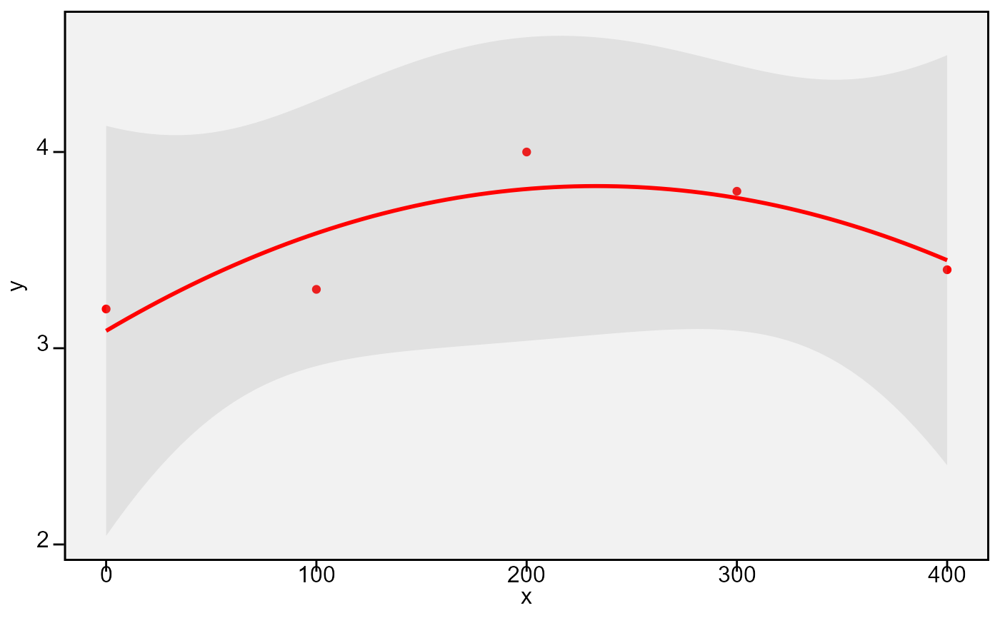
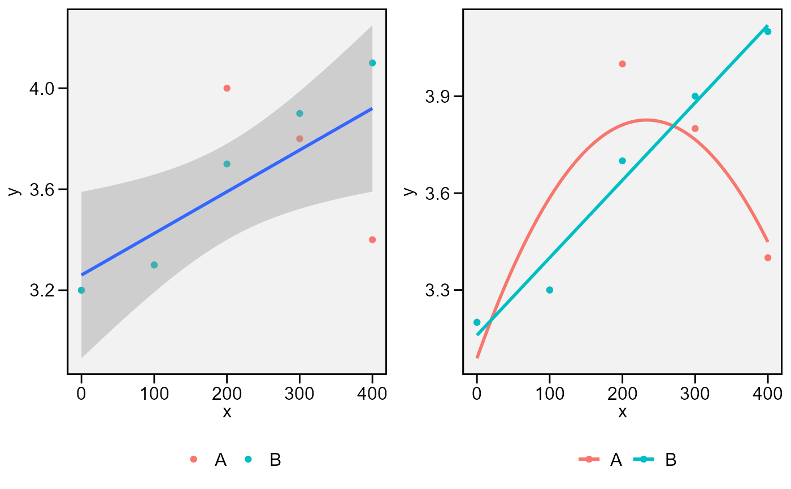

plot_lines() Creates a line plot based on one quantitative factor
and one numeric variable. It can be used to show the results of a one-way
trial with quantitative treatments.
plot_factlines() Creates a line plot based on: one categorical and one quantitative factor and
one numeric variable. It can be used to show the results of a
two-way trial with qualitative-quantitative treatment structure.
plot_lines( .data, x, y, fit, level = 0.95, confidence = TRUE, xlab = NULL, ylab = NULL, n.dodge = 1, check.overlap = FALSE, col = "red", alpha = 0.2, size.shape = 1.5, size.line = 1, size.text = 12, fontfam = "sans", plot_theme = theme_metan() ) plot_factlines( .data, x, y, group, fit, level = 0.95, confidence = TRUE, xlab = NULL, ylab = NULL, n.dodge = 1, check.overlap = FALSE, legend.position = "bottom", grid = FALSE, scales = "free", col = TRUE, alpha = 0.2, size.shape = 1.5, size.line = 1, size.text = 12, fontfam = "sans", plot_theme = theme_metan() )
| .data | The data set |
|---|---|
| x, y | The variables to be mapped to the |
| fit | The polynomial degree to use. It must be between 1 (linear fit) to
4 (fourth-order polynomial regression.). In |
| level | The fonfidence level. Defaults to |
| confidence | Display confidence interval around smooth? (TRUE by default) |
| xlab, ylab | The labels of the axes x and y, respectively. Defaults to
|
| n.dodge | The number of rows that should be used to render the x labels. This is useful for displaying labels that would otherwise overlap. |
| check.overlap | Silently remove overlapping labels, (recursively) prioritizing the first, last, and middle labels. |
| col | The colour to be used in the line plot and points. |
| alpha | The alpha for the color in confidence band |
| size.shape | The size for the shape in plot |
| size.line | The size for the line in the plot |
| size.text | The size of the text |
| fontfam | The family of the font text. |
| plot_theme | The graphical theme of the plot. Default is
|
| group | The grouping variable. Valid for |
| legend.position | Valid argument for |
| grid | Valid argument for |
| scales | Valid argument for |
An object of class gg, ggplot.
Tiago Olivoto tiagoolivoto@gmail.com
# \donttest{ library(metan) # One-way line plot df1 <- data.frame(group = "A", x = c(0, 100, 200, 300, 400), y = c(3.2, 3.3, 4.0, 3.8, 3.4)) plot_lines(df1, x, y, fit = 2)# Two-way line plot df2 <- data.frame(group = "B", x = c(0, 100, 200, 300, 400), y = c(3.2, 3.3, 3.7, 3.9, 4.1)) facts <- rbind(df1, df2) p1 <- plot_factlines(facts, x, y, group = group, fit = 1) p2 <- plot_factlines(facts, x = x, y = y, group = group, fit = c(2, 1), confidence = FALSE) arrange_ggplot(p1, p2)# }